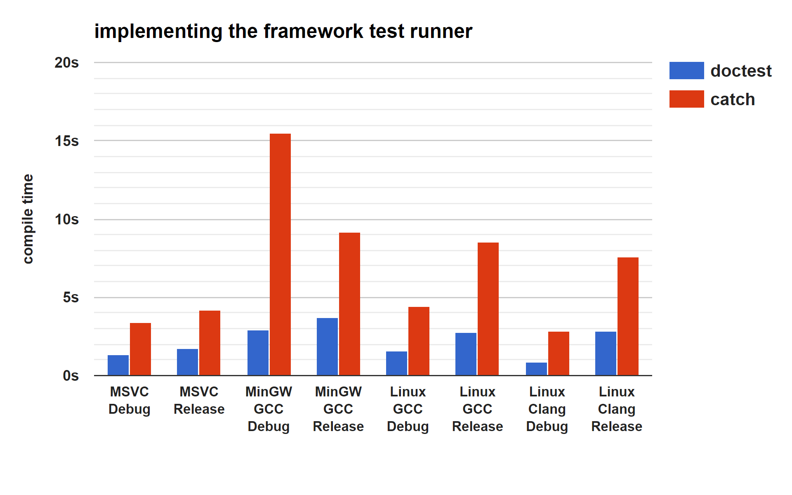
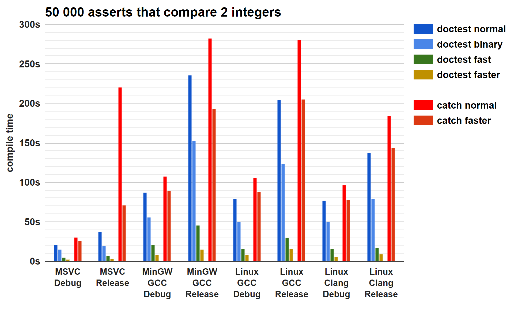
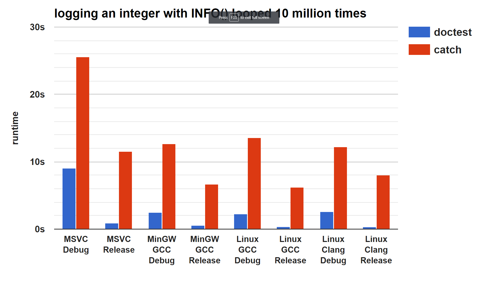
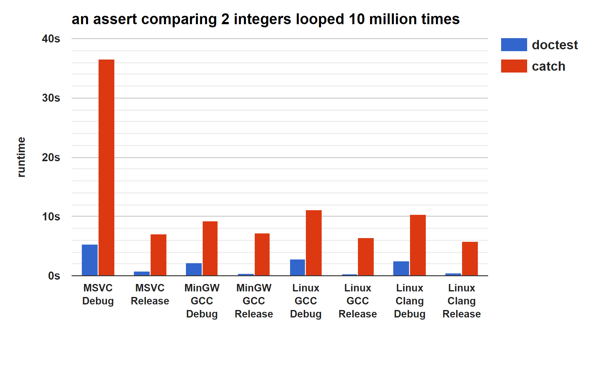

# Benchmarks
The benchmarks are done with [**this**](../../scripts/bench/bench.py) script using CMake. There are 3 benchmarking scenarios:
- [the cost of including the header](#cost-of-including-the-header)
- [the cost of an assertion macro](#cost-of-an-assertion-macro)
- [runtime speed of lots of asserts](#runtime-benchmarks)
Compilers used:
- WINDOWS: Microsoft Visual Studio Community 2017 - Version 15.8.1+28010.2003
- WINDOWS: gcc 8.1.0 (x86_64-posix-seh-rev0, Built by MinGW-W64 project)
- LINUX: gcc 6.3.0 20170406 (Ubuntu 6.3.0-12ubuntu2)
- LINUX: clang 4.0.0-1 (tags/RELEASE_400/rc1) Target: x86_64-pc-linux-gnu
Environment used (Intel i7 3770k, 16g RAM):
- Windows 7 - on an SSD
- Ubuntu 17.04 in a VirtualBox VM - on a HDD
**doctest** version: 2.2.0 (released on 2018.12.02)
[**Catch**](https://github.com/catchorg/Catch2) version: 2.3.0 (released on 2018.07.22)
# Compile time benchmarks
## Cost of including the header
This is a benchmark that is relevant only to single header and header only frameworks - like **doctest** and [**Catch**](https://github.com/catchorg/Catch2).
The script generates 201 source files and in 200 of them makes a function in the form of ```int f135() { return 135; }``` and in ```main.cpp``` it forward declares all the 200 such dummy functions and accumulates their result to return from the ```main()``` function. This is done to ensure that all source files are built and that the linker doesn't remove/optimize anything.
- **baseline** - how much time the source files need for a single threaded build with ```msbuild```/```make```
- **+ implement** - only in ```main.cpp``` the header is included with a ```#define``` before it so the test runner gets implemented:
```
#define DOCTEST_CONFIG_IMPLEMENT_WITH_MAIN
#include "doctest.h"
```
- **+ header everywhere** - the framework header is also included in all the other source files
- **+ disabled** - remove everything testing-related from the binary
| doctest | baseline | + implement | + header everywhere | + disabled |
|---------------------|----------|-------------|---------------------|------------|
| MSVC Debug | 4.89 | 6.21 | 8.33 | 6.39 |
| MSVC Release | 4.38 | 6.39 | 8.71 | 6.02 |
| MinGW GCC Debug | 8.12 | 10.86 | 14.73 | 10.17 |
| MinGW GCC Release | 8.21 | 11.11 | 15.03 | 10.71 |
| Linux GCC Debug | 4.20 | 6.23 | 9.81 | 6.24 |
| Linux GCC Release | 4.29 | 6.93 | 11.05 | 6.76 |
| Linux Clang Debug | 8.70 | 10.02 | 14.43 | 11.13 |
| Linux Clang Release | 9.30 | 11.68 | 16.20 | 11.58 |
| Catch | baseline | + implement | + header everywhere | + disabled |
|---------------------|----------|-------------|---------------------|------------|
| MSVC Debug | 4.82 | 7.83 | 88.85 | 88.72 |
| MSVC Release | 4.38 | 9.97 | 87.17 | 88.35 |
| MinGW GCC Debug | 8.00 | 57.28 | 137.28 | 132.73 |
| MinGW GCC Release | 8.38 | 22.94 | 97.17 | 97.22 |
| Linux GCC Debug | 4.42 | 15.57 | 97.94 | 97.18 |
| Linux GCC Release | 4.50 | 19.59 | 99.48 | 100.75 |
| Linux Clang Debug | 8.76 | 15.60 | 107.99 | 110.61 |
| Linux Clang Release | 9.32 | 25.75 | 118.67 | 117.11 |
<img src="../../scripts/data/benchmarks/header.png" width="410" align="right">

### Conclusion
#### doctest
- instantiating the test runner in one source file costs ~1-3 seconds ```implement - baseline```
- the inclusion of ```doctest.h``` in one source file costs between 11ms - 23ms ```(header_everywhere - implement) / 200```
- including the library everywhere but everything disabled costs around 2 seconds ```disabled - baseline``` for 200 files
#### [Catch](https://github.com/catchorg/Catch2)
- instantiating the test runner in one source file costs ~3-50 seconds ```implement - baseline```
- the inclusion of ```catch.hpp``` in one source file costs between 380ms - 470ms ```(header_everywhere - implement) / 200```
- using the config option to disable the library (**```CATCH_CONFIG_DISABLE```**) has no effect on the header cost
----------
So if ```doctest.h``` costs 11ms and ```catch.hpp``` costs 400ms on MSVC - then the **doctest** header is >> **36** << times lighter (for MSVC)!
----------
The results are in seconds and are in **no way** intended to bash [**Catch**](https://github.com/catchorg/Catch2) - the **doctest** framework wouldn't exist without it.
The reason the **doctest** header is so light on compile times is because it forward declares everything and doesn't drag any headers in the source files (except for the source file where the test runner gets implemented). This was a key design decision.
## Cost of an assertion macro
The script generates 11 ```.cpp``` files and in 10 of them makes 50 test cases with 100 asserts in them (of the form ```CHECK(a==b)``` where ```a``` and ```b``` are always the same ```int``` variables) - **50k** asserts! The testing framework gets implemented in ```main.cpp```.
- **baseline** - how much time a single threaded build takes with the header included everywhere - no test cases or asserts!
- ```CHECK(a==b)``` - will add ```CHECK()``` asserts which decompose the expression with template machinery
**doctest** specific:
- **+fast 1** - will add [**```DOCTEST_CONFIG_SUPER_FAST_ASSERTS```**](configuration.html#doctest_config_super_fast_asserts) to speed up the compilation of the normal asserts ```CHECK(a==b)```
- ```CHECK_EQ(a,b)``` - will use ```CHECK_EQ(a,b)``` instead of the expression decomposing ones
- **+fast 2** - will add [**```DOCTEST_CONFIG_SUPER_FAST_ASSERTS```**](configuration.html#doctest_config_super_fast_asserts) to speed up the compilation of the binary asserts ```CHECK_EQ(a,b)```
- **+disabled** - all test case and assert macros will be disabled with [**```DOCTEST_CONFIG_DISABLE```**](configuration.html#doctest_config_disable)
[**Catch**](https://github.com/catchorg/Catch2) specific:
- **+fast** - will add [**```CATCH_CONFIG_FAST_COMPILE```**](https://github.com/catchorg/Catch2/blob/master/docs/configuration.html#catch_config_fast_compile) which speeds up the compilation of the normal asserts ```CHECK(a==b)```
- **+disabled** - all test case and assert macros will be disabled with **```CATCH_CONFIG_DISABLE```**
| doctest | baseline | ```CHECK(a==b)``` | +fast 1 | ```CHECK_EQ(a,b)``` | +fast 2 | +disabled |
|---------------------|----------|-------------------|---------|---------------------|---------|-----------|
| MSVC Debug | 2.69 | 27.37 | 10.37 | 17.17 | 4.82 | 1.91 |
| MSVC Release | 3.15 | 58.73 | 20.73 | 26.07 | 6.43 | 1.83 |
| MinGW GCC Debug | 3.78 | 97.29 | 43.05 | 59.86 | 11.88 | 1.67 |
| MinGW GCC Release | 4.09 | 286.70 | 95.42 | 156.73 | 18.16 | 2.03 |
| Linux GCC Debug | 2.39 | 91.36 | 41.92 | 52.26 | 10.16 | 1.32 |
| Linux GCC Release | 3.29 | 257.40 | 97.46 | 128.84 | 19.38 | 1.79 |
| Linux Clang Debug | 2.40 | 85.52 | 43.53 | 51.24 | 8.32 | 1.62 |
| Linux Clang Release | 3.40 | 160.65 | 79.34 | 81.52 | 11.90 | 1.82 |
And here is [**Catch**](https://github.com/catchorg/Catch2) which only has normal ```CHECK(a==b)``` asserts:
| Catch | baseline | ```CHECK(a==b)``` | +fast | +disabled |
|---------------------|----------|-------------------|-------|-----------|
| MSVC Debug | 8.20 | 31.22 | 25.54 | 8.22 |
| MSVC Release | 10.13 | 448.68 | 168.67 | 10.20 |
| MinGW GCC Debug | 53.54 | 152.38 | 131.85 | 49.07 |
| MinGW GCC Release | 19.26 | 590.16 | 466.69 | 18.99 |
| Linux GCC Debug | 15.05 | 117.30 | 95.33 | 14.79 |
| Linux GCC Release | 18.77 | 608.94 | 482.73 | 18.96 |
| Linux Clang Debug | 12.27 | 94.39 | 77.33 | 12.11 |
| Linux Clang Release | 20.75 | 545.84 | 506.02 | 20.15 |

### Conclusion
**doctest**:
- is between 0 and 8 times faster than [**Catch**](https://github.com/catchorg/Catch2) when using normal expression decomposing ```CHECK(a==b)``` asserts
- asserts of the form ```CHECK_EQ(a,b)``` with no expression decomposition - around 31-63% faster than ```CHECK(a==b)```
- the [**```DOCTEST_CONFIG_SUPER_FAST_ASSERTS```**](configuration.html#doctest_config_super_fast_asserts) identifier makes the normal asserts faster by 57-68%
- the [**```DOCTEST_CONFIG_SUPER_FAST_ASSERTS```**](configuration.html#doctest_config_super_fast_asserts) identifier makes the binary asserts even faster by another 84-91%
- using the [**```DOCTEST_CONFIG_DISABLE```**](configuration.html#doctest_config_disable) identifier the asserts just disappear as if they were never written - even lower than the baseline (because most of the implementation is also gone)
[**Catch**](https://github.com/catchorg/Catch2):
- using [**```CATCH_CONFIG_FAST_COMPILE```**](https://github.com/catchorg/Catch2/blob/master/docs/configuration.html#catch_config_fast_compile) results in 10-30% faster build times for asserts (and in one case 73%).
- using the **```CATCH_CONFIG_DISABLE```** identifier provides the same great benefits for assert macros as the doctest version ([**```DOCTEST_CONFIG_DISABLE```**](configuration.html#doctest_config_disable)) - but not for the header cost
## Runtime benchmarks
The runtime benchmarks consist of a single test case with a loop of 10 million iterations performing the task - a single normal assert (using expression decomposition) or the assert + the logging of the loop iterator ```i```:
```
for(int i = 0; i < 10000000; ++i)
CHECK(i == i);
```
or
```
for(int i = 0; i < 10000000; ++i) {
INFO(i);
CHECK(i == i);
}
```
Note that the assert always passes - the goal should be to optimize for the common case - lots of passing test cases and a few that maybe fail.
| doctest | assert | + info | &nbsp;&nbsp;&nbsp;&nbsp;&nbsp;&nbsp;&nbsp;&nbsp;&nbsp;&nbsp;&nbsp;&nbsp;&nbsp;&nbsp;&nbsp;&nbsp;&nbsp;&nbsp;&nbsp;&nbsp;&nbsp;&nbsp;&nbsp;&nbsp;&nbsp;&nbsp;&nbsp;&nbsp;&nbsp;&nbsp;&nbsp; | Catch | assert | + info |
|---------------------|---------|---------|-|---------------------|---------|---------|
| MSVC Debug | 4.00 | 11.41 | | MSVC Debug | 5.60 | 213.91 |
| MSVC Release | 0.40 | 1.47 | | MSVC Release | 0.76 | 7.60 |
| MinGW GCC Debug | 1.05 | 2.93 | | MinGW GCC Debug | 1.17 | 9.54 |
| MinGW GCC Release | 0.34 | 1.27 | | MinGW GCC Release | 0.36 | 4.28 |
| Linux GCC Debug | 1.24 | 2.34 | | Linux GCC Debug | 1.44 | 9.69 |
| Linux GCC Release | 0.29 | 0.52 | | Linux GCC Release | 0.29 | 3.60 |
| Linux Clang Debug | 1.15 | 2.38 | | Linux Clang Debug | 1.21 | 9.91 |
| Linux Clang Release | 0.28 | 0.50 | | Linux Clang Release | 0.32 | 3.27 |


### Conclusion
**doctest** is around ~20% faster than catch for asserts but a few times faster when also logging variables and context (and in the case of one particular compiler over 18 times faster).
----------
The bar charts were generated using [**this google spreadsheet**](https://docs.google.com/spreadsheets/d/1p3MAURUfPzKT7gtJOVuJU2_yVKSqkoD1nbypA1K3618) by pasting the data from the tables.
If you want a benchmark that is not synthetic - check out [**this blog post**](http://baptiste-wicht.com/posts/2016/09/blazing-fast-unit-test-compilation-with-doctest-11.html) of [**Baptiste Wicht**](https://github.com/wichtounet) who tested the compile times of the asserts in the 1.1 release with his [**Expression Templates Library**](https://github.com/wichtounet/etl)!
While reading the post - keep in mind that if a part of a process takes 50% of the time and is made 10000 times faster - the overall process would still be only roughly 50% faster.
---------------
[Home](readme.html#reference)
<p align="center"><img src="../../scripts/data/logo/icon_2.svg"></p>